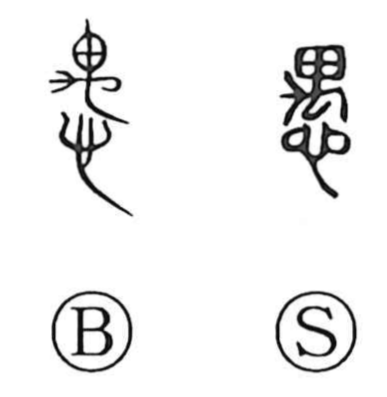

愚

Uncategorized
Kun: oroka | On: gu
foolish ・ stupidity ・ folly
Explanation
A phono-semantic character: 禺 (gu) provides the sound. In its ancient form 禺 likely depicted a crouching reptile with an oversized head. Unlike nimble creatures, it sits still and wary, its movements heavy and slow—an image of dullness. From this sense of sluggish motion the character came to mean “foolish,” and later extended to the dullness of the mind itself.